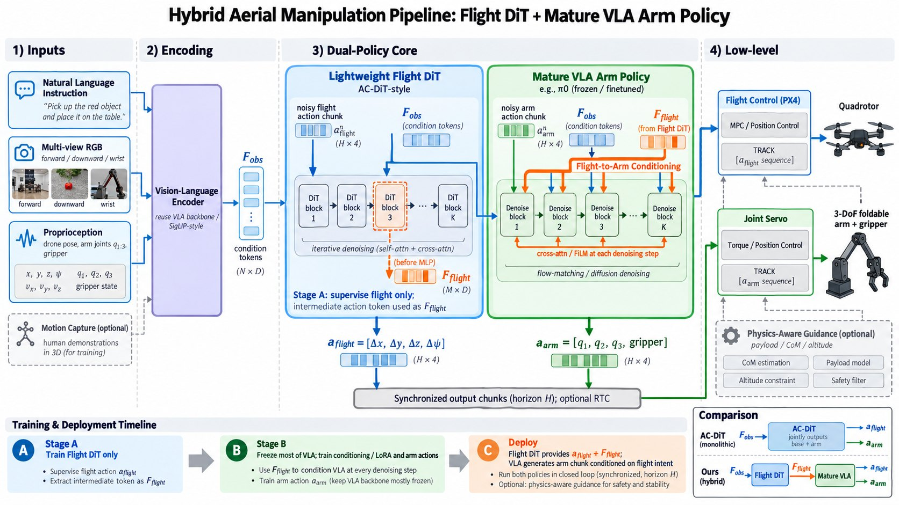

Aerial manipulation: keep the arm pretrained, learn flight separately
Reuse a vision-language-action model (VLA) that already knows how to use an arm, and let a small Flight DiT learn flight from the scarce aerial data.
Part 1
Introduction
Problem
Aerial data is scarce. Tabletop manipulation data can be collected at scale. Aerial manipulation data needs expert teleoperation or hand-coded scripts and MPC, which is not enough to train a whole-vehicle policy from scratch.
The arm is already solved elsewhere. A VLA pretrained on tabletop data already has the language understanding and fine arm control. Scarce flight data should not be spent retraining it.
Don't edit the arm's actions with flight constraints. Writing flight feasibility into one shared action chunk changes the pretrained arm behaviour, and ties the flight coupling to that one backbone, so upgrading the VLA later means rebuilding the constraint.
Idea
Two policies. A small Flight DiT handles flight. A mature VLA (π0.5) handles the arm. Flight data only trains the small model.
Flight DiT. A lightweight diffusion Transformer, sized like RDT-170M to train on one 4090. It reads language, images and proprioception, and outputs a flight chunk aflight = [Δx, Δy, Δz, Δψ] plus a flight-intent token Fflight.
Arm VLA. π0.5 stays mostly frozen, with LoRA and a conditioning interface. It reads Fflight as a condition at every generation step and outputs aarm = [q1, q2, q3, q4, gripper] (FA-Hexa's arm: three pitch joints and a wrist roll).
Easy to swap. The two policies share only Fflight. Replacing the arm VLA means reconnecting that interface, not retraining the flight–arm coupling.
Low level stays split. The flight controller tracks the flight chunk; joint servos track the arm.
Pipeline

Blue: Flight DiT. Green: the pretrained VLA. Orange: flight-to-arm conditioning. Inputs are a language instruction, forward / downward / wrist RGB, pose, velocity, arm joints and gripper. The figure still draws a quadrotor with a 3-DoF arm; the platform is now FA-Hexa with a 4-DoF arm.
Stage A: flight only. Train the Flight DiT on aflight and extract Fflight.
Stage B: condition the arm. Keep most of the VLA frozen; train LoRA and the interface against Fflight.
Stage C: deploy. Run both chunks in sync; flight and arm are tracked by their own low-level controllers.
Related work
Models
Transformer(Vaswani et al., NeurIPS 2017): the backbone of both policies. Cross-attention is where language, images and Fflight enter.
DiT(Peebles & Xie, ICCV 2023): a Transformer inside diffusion. The Flight DiT uses the same idea to generate a short flight-action chunk.
RDT-1B / RDT-170M(Liu et al., ICLR 2025): a diffusion Transformer robot policy. RDT-1B fine-tuning costs about a week on 4×A100; RDT-170M (hidden 1024, depth 14, 64-step prediction) fits on one 4090 and is the starting point for the Flight DiT.
Aerial manipulation
Flying Hand(He et al., 2025): an end-effector-centric interface on a fully actuated hexarotor with whole-body MPC. The high level only talks about the end effector. FA-Hexa is the same class of vehicle.
Aerial Manipulation in the Wild(Zhan et al., 2026): a Diffusion Policy proposes end-effector motion and whole-body MPC executes it, outdoors. Here the upper model is a tabletop-pretrained VLA instead.
π, But Make It Fly / AirVLA(Tucker et al., 2026): visual features transfer to flight, control dynamics do not. Their fix writes payload guidance into the VLA's sampling (23% → 50% pick-and-place). This project keeps the lesson but not the mechanism: flight is a separate module and only a condition.
AC-DiT(Chen et al., 2025): extract base motion first, then condition the body on it. Fflight comes from this idea, but AC-DiT still predicts the whole body with one network (about two weeks on 8×A100).
Plan
Goal: ICML 2027. Dates are not out yet; going by the 2026 cycle, the abstract is due around 23 Jan and the full paper around 28 Jan 2027 (2026 dates). That is about 15 weeks from mid-October.
Next week: dataset and a π0.5 baseline. Generate the training dataset with specialists / RL; we will try both. Fine-tune π0.5 with LoRA on it and evaluate it as one of the baselines in the benchmark, to see how well a fine-tuned VLA does on its own.
After that: train the Flight DiT. Start Stage A: train RDT-170M on flight actions only and keep the pre-MLP token as Fflight.
Route
Compute
Decision
Full AC-DiT
8×A100, about two weeks
Out of scope
RDT-1B fine-tune
4×A100, about a week (≈ $500 per run)
Too expensive
π0.5 LoRA
One GPU, about 2–3 days
Next week, as a benchmark baseline
RDT-170M
One 4090, about a week
After the LoRA baseline
Part 2
Specialist trajectories
Specialist dataset on FA-Hexa
Why check the specialists. π0.5 LoRA is trained on successful demonstrations from AM-Bench's scripted specialists, one per task. A specialist that cheats a loose success check, or fails for reasons unrelated to the task, would go straight into the training data. So every task was recorded five times and watched before recording at scale.
Platform and control. FA-Hexa (fully actuated hexarotor, 4-DoF arm), absolute end-effector targets, IK plus PID at 120 Hz.
Videos. 1280×720, real time. Each clip stops 5 s after success, or at the end of the episode. The overlay shows the task, run, time and a green “SUCCESS at X.Xs”.
44 / 60official AM-Bench code
59 / 60after the upgrades
5tasks changed
Task
Official
Upgraded
Change
01 Press button
5/5
5/5
None
02 Peg in hole
5/5†
5/5
Reset grasp fixed
03 Inspect surface (NDT)
5/5
5/5
None (follow camera only)
04 Wipe window
0/5
5/5
New specialist
05 Cabinet pick and place
5/5
5/5
None
06 Frame assembly
0/5
5/5
Stricter check, new specialist
07 Harvest lemon
4/5
4/5
None
08 Toss ball
0/5
5/5
New specialist
09 Rotate valve
5/5
5/5
None
10 Push slider
5/5
5/5
None
11 Pull lever
5/5
5/5
None
12 Open door
5/5*
5/5
Handle latch in the check, new specialist
Each cell counts successes over five runs. * passes only the old check, by pushing the door open with the vehicle. † unreliable: 6 of 8 across all runs with the official code. Harvest lemon is 10 of 11 across all runs and was left unchanged.
Before / after
Both sides are FA-Hexa. Left: official AM-Bench code. Right: upgraded. All clips play together on a loop.
Toss ball
Before0/5After5/5 · ~5.2 s
What was wrong
The fingers started closed, so the ball was spawned overlapping them.
The specialist first pitches the gripper 36° down; the fingers hit the vehicle's own rotor arm and squeeze the ball out.
What changed
New specialist TossBallLobPolicy: carry the ball level to a point behind the bin and move forward smoothly.
Predict the landing point from the ball's measured position and velocity; open the gripper when it reaches the bin centre.
Keep speed until the fingers have let go, then back off so the vehicle stays 0.7 m behind the bin. Success check unchanged.
Wipe window
Before0/5After5/5 · 6–10 s
What was wrong
The specialist assumes a fixed sponge offset and keeps moving up while the sponge is already on the glass.
Friction from the glass drags the sponge out of the fingers.
About 7 s per stain: four stains do not fit in the 20 s episode.
What changed
New specialist WipeWindowPressPolicy: line up 6 cm in front of each stain, press straight in, hold 0.3 s, back straight out.
Measure the sponge's position in the hand before every press.
Skip stains that are already gone. Success check unchanged.
Frame assembly
Before0/5After5/5 · seated flush
What was wrong
The success check was too loose: within 10 cm of the peg midpoint counted, even a frame hanging on the peg tips.
The level gripper's fingers close along the top bar, so the frame just hangs on them and swings.
The insertion stops around the middle of the pegs.
What changed
New check: within 2 cm of flush against the wall, within 3 cm of the peg centre, under 10° to the wall, and still for 0.25 s.
New specialist FrameAssemblyBarGraspPolicy: roll the gripper 90° and clamp the top bar; approach from above so the frame is not knocked over.
Measure the frame in front of the pegs, align it, push it flush, release.
This task only: finger stiffness 100 → 1000, base x limit 1.0 → 1.25 m.
Open door
Before5/5* · pushes the doorAfter5/5 · via the handle
What was wrong
The check only asked for the door to open past 20°.
The specialist pushed the door leaf open and never touched the handle.
What changed
New check: the door starts latched and unlocks only after the gripper closes at the handle for 0.2 s.
New specialist OpenDoorHandlePolicy: align in closed loop in front of the handle, reach in, close, wait for the unlatch, then push along the hinge arc.
Limit: the handle in door.usd is flush with the door and has no collision body, so it cannot be pinched. Closing at the handle stands in for operating it.
Peg in hole
Beforethis run failed · 6/8 overallAfter7/7 · ~8.9 s
What was wrong
Unreliable: the specialist brings the peg tip only to the hole plane, and the check needs it past that plane.
At reset the fingers were closed, so objects placed in the gripper overlapped them (shared with toss ball and wipe window).
What changed
At reset the fingers open to the object's width (width / 2 + 1 mm).
The object is seated against the palm instead of centred on the tool tip, so it is held deeper.
Specialist and check are official; 7 of 7 runs since.
All twelve tasks
FA-Hexa after the upgrades, run 1 of 5.
01 Press button 5/502 Peg in hole 5/503 Inspect surface (NDT) 5/504 Wipe window 5/505 Cabinet pick and place 5/506 Frame assembly 5/507 Harvest lemon 4/508 Toss ball 5/509 Rotate valve 5/510 Push slider 5/511 Pull lever 5/512 Open door 5/5
Part 3
Dataset generation
Specialist / RL
Specialists. The upgraded scripted specialists from Part 2, one per task; only successful episodes are kept.
RL. Policies trained with RL in the same tasks, as a second source of trajectories.
We will try both. How much data each task needs is still open, so both sources are generated and compared.
Pipeline
Record.record_demos_scripted.py runs the specialist at the simulator's native 120 Hz on FA-Hexa and saves successful episodes in the LeRobot format: end-effector pose, gripper width, the end-effector camera, the base camera (for a camera ablation), and the task instruction.
Check.validate_lerobotdataset.py resamples to 20 Hz and checks the episodes before export.
Export.export_lerobot_to_openpi.py writes an OpenPI dataset at 20 Hz, with actions as end-effector targets relative to the current pose.
Normalise. OpenPI's compute_norm_stats for the AM-Bench π0.5 config.
Train and evaluate. LoRA-fine-tune π0.5, serve it, and evaluate it in AM-Bench as a baseline: actions run at 20 Hz and are interpolated to the 120 Hz controller.
Code and data
AM-Bench with the fixes.ambench/: a snapshot of AM-Bench with the Part 2 specialists and checks; the changes alone are in SPECIALIST_FIXES.diff.
Pipeline.pipeline/: the demo recorder, probes, and the π0.5 serve and evaluation scripts.
Videos.data/videos/: all 60 FA-Hexa runs and the before clips.